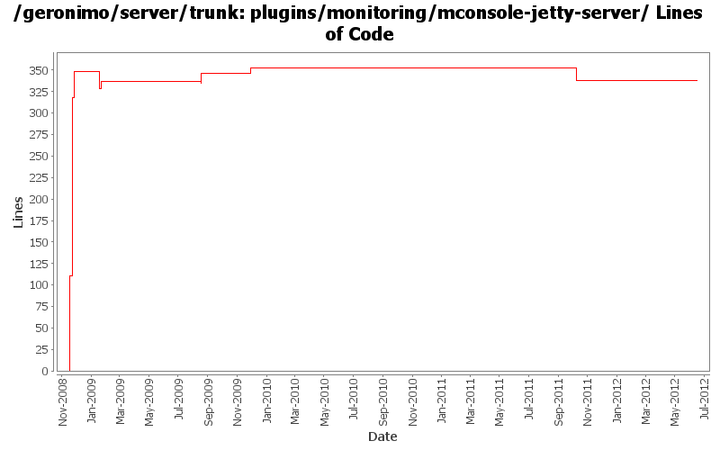

[root]/plugins/monitoring/mconsole-jetty-server
 mconsole-itest-simple
(2 files, 100 lines)
mconsole-itest-simple
(2 files, 100 lines)
 src
(0 files, 0 lines)
src
(0 files, 0 lines)
 test
(0 files, 0 lines)
test
(0 files, 0 lines)
 java
(0 files, 0 lines)
java
(0 files, 0 lines)
 org
(0 files, 0 lines)
org
(0 files, 0 lines)
 apache
(0 files, 0 lines)
apache
(0 files, 0 lines)
 geronimo
(0 files, 0 lines)
geronimo
(0 files, 0 lines)
 monitoring
(0 files, 0 lines)
monitoring
(0 files, 0 lines)
 console
(1 files, 120 lines)
console
(1 files, 120 lines)
 resources
(1 files, 32 lines)
resources
(1 files, 32 lines)

| Author | Changes | Lines of Code | Lines per Change |
|---|---|---|---|
| Totals | 16 (100.0%) | 540 (100.0%) | 33.7 |
| djencks | 10 (62.5%) | 484 (89.6%) | 48.4 |
| dwoods | 2 (12.5%) | 43 (8.0%) | 21.5 |
| xiaming | 2 (12.5%) | 7 (1.3%) | 3.5 |
| gawor | 1 (6.3%) | 6 (1.1%) | 6.0 |
| rwonly | 1 (6.3%) | 0 (0.0%) | 0.0 |
Update trunk version to 4.0.0-SNAPSHOT
1 lines of code changed in 1 file:
Use project.xxx to replace pom.xxx
6 lines of code changed in 1 file:
some codes clean up
0 lines of code changed in 1 file:
GERONIMO-5290 fix many of the deprecation warnings from maven 3
1 lines of code changed in 1 file:
GERONIMO-4566 port build changes from 2.2 to allow releasing with release plugin
133 lines of code changed in 1 file:
GERONIMO-4883 renamed agent to agent-car-ejb, use correct name in test server. Also minor javadoc fix
1 lines of code changed in 1 file:
GERONIMO-4655 upgrade version to 3.0-SNAPSHOT, make a few things more consistent
12 lines of code changed in 1 file:
[maven-release-plugin] prepare branch 2.2
1 lines of code changed in 1 file:
GERONIMO-4753 and snapshot and source-repository cleanup
14 lines of code changed in 1 file:
GERONIMO-4655 some pom cleanup so the release plugin might be able to branch
1 lines of code changed in 1 file:
GERONIMO-4538 Move boilerplate to configs, make groupIds more sensible
1 lines of code changed in 1 file:
GERONIMO-4475 Improve JMS portlet for Borker configuration. Applied 4 patches from Ivan.
8 lines of code changed in 1 file:
add codehaus release repo and remove other repos
6 lines of code changed in 1 file:
include codehaus-snapshot repo here, so we don't search it for all artifact builds
35 lines of code changed in 1 file:
GERONIMO-4415 use jpa for data access in monitoring console
209 lines of code changed in 1 file:
GERONIMO-4415 start of code cleanup and use of jpa in console. Also add a server assembly for testing
111 lines of code changed in 1 file: